|
|
| worms text index | photo index |
| Worms > Phylum Sipuncula |
| Peanut
worms Phylum Sipuncula updated Oct 2016
Where seen? These pink smooth fat worms are sometimes seen on some of our shores. They are more commonly encountered in mangroves and on soft ground (silty or muddy). But also in sandy areas near seagrasses. What are peanut worms? Peanut worms are unsegmented and belong to Phylum Sipuncula. There are about 300 known species of peanut worms. |
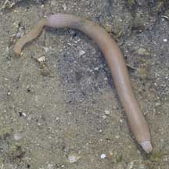 Cyrene Reef, Apr 07 |
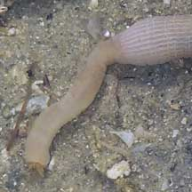 |
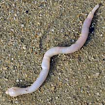 Pasir Ris, May 09 |
| Features: 5-10cm long. Peanut
worms are burrowing worm-like creatures that are sometimes seen above
the ground on all our shores. When contracted, their ridged skins
looks like the texture of peanut shells. Most are only a few millimeters
long. Some burrow in mud, while others hide in crevices or abandoned
snail shells and even in tubeworm tubes. 'Siphunculus' means 'little
tube'. What is unique to peanut worms is their introvert, a long tube
on their front end. This is attached to the rest of the body, called the trunk. Like the finger of a glove, the introvert can be turned completely inside the trunk or extend out of the trunk. The mouth is at the end of the introvert, surrounded with tentacles. The tentacles are covered with cilia (tiny beating hairs) and mucous. Food particles are gathered with the tentacles and then either the entire introvert is withdrawn into the trunk and the food particles eaten, or cilia on the tentacles transfer the particles along tracts into the mouth. Using their introvert, peanut worms can collect food while their soft bodies remain safely hidden. Some also use their introvert to burrow. One species even uses its introvert to swim! |
|
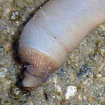 |
||
| What do they eat? Most peanut
worms eat detritus, most of them mopping it up from the surface. Others
eat their way through the sand as they burrow, and process the edible
bits in it. They have a J-shaped digestive tract with the anus in
the middle of the body so that wastes are brought back up near the
entrance of the burrow. One kind of peanut worm can actually pierce
annelid worms and suck out their juices! Peanut worm babies: Peanut worms have separate genders, releasing eggs and sperm simultaneously into the water for external fertilisation. Some have a free-swimming larval stage that can travel long distances. In others, the eggs develop directly into little peanut worms. Human uses: Peanut worms were once so plentiful in Singapore that they were collected and fed to ducks. Status and threats: Like other creatures of the intertidal zone, they are affected by human activities such as reclamation and pollution. Trampling by careless visitors can also have an impact on local populations. |
| Peanut worms on Singapore shores |
On wildsingapore
flickr
|
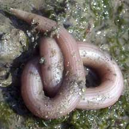 Chek Jawa, Apr 02 |
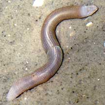 Chek Jawa, Nov 03 |
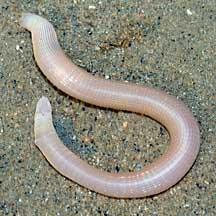 Changi, Jul 08 |
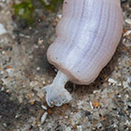 |
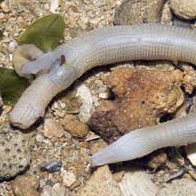 Pulau Sekudu, Jul 09 Photo shared by Marcus Ng on his blog. |
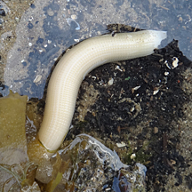 Berlayar Creek, Apr 12 |
Peanut worms seen above ground in Tanah Merah after the oil spill in May 10
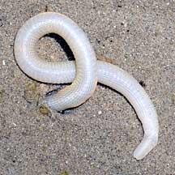 Tanah Merah, May 10 |
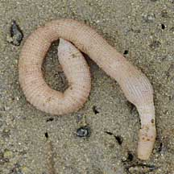 Tanah Merah, Jun 10 |
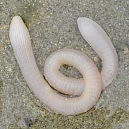 Tanah Merah, Jun 10 |
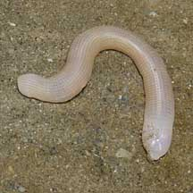 Tanah Merah, Jul 10 |
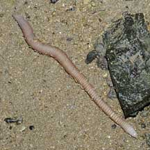 Tanah Merah, Jul 10 |
| Phylum
Sipuncula recorded for Singapore from Wee Y.C. and Peter K. L. Ng. 1994. A First Look at Biodiversity in Singapore *from WORMS
|
Links
References
|